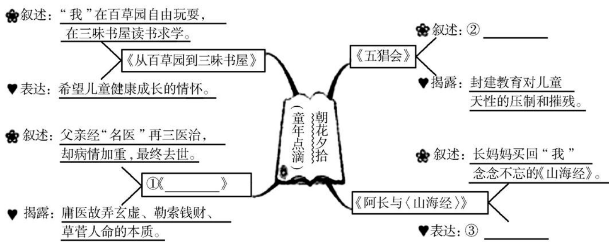

石家庄市第四十一中学 2025—2026 学年第一学期10月月考
初 一 语 文
学校： 班级： 姓名：
第一部分 （1-4 题 12 分）
1．下面加点字注音完全正确的一项是（ ）（3 分）
A．酝酿（liàng） 嫩叶（nèn） 抖擞（sǒu） 鸟巢（cháo）
B．薄烟（bó） 黄晕（yùn） 着落（zhuó luò） 戴笠（lì）
C．莅临（lì） 赶趟（tàng） 嗡嗡（wēng） 眨眼（zǎ）
D．迷藏（cáng） 散心（sǎn） 涨水（zhǎng） 应和（hé）
2．下列各组词语中书写全都正确的一组是（ ）（3 分）
A．呼朋引伴 晌晴 娇媚 冷洌
B．争先恐后 化妆 急躁 静谧
C．披蓑带笠 铃铛 哄托 端庄
D．苍海桑田 箫瑟 竦峙 天崖
3．下面加点的词语使用错误的一项是（ ）（3 分）
A．一年之计在于春，我们应当趁青春年少时，学有所得，学有所成。
B．外面的小雨淅淅沥沥地下着，给宁静的夜晚增添了一笔美丽的色彩。
C．刘叔叔今天打扮得花枝招展，让人眼前一亮。
D．面对敌人的步步紧逼、咄咄逼人，我们的方针是针锋相对，寸土必争。
4.下列文学文化常识表述有误的一项是（ ）（3 分）
A． 《次北固山下》是一首五言律诗，分为首联、颔联、颈联、尾联。
B．《天净沙·秋思》中，天净沙是词牌名，秋思是题目。
C． 曹操，字孟德，东汉末年政治家、军事家、文学家。
D． 李白，字太白，号青莲居士，唐代诗人，被誉为“诗仙”。
第二部分 （5-17 题 48 分）
一、 诗文阅读（共23 分）
（一）默写（共6 分）
5.阅读下面的文字，将横线空缺处补充完整。（6 分）
在学习七上第一单元的过程中，我们能够感受景物之美。 “牛背上牧童的短笛，① ”，彰显春风的和煦轻柔； “春天像健壮的青年，② ”，表现春天的蓬勃力量；“潮平两岸阔，③ 。④ ，江春入旧年”，感受开阔江面，初春萌动； “⑤ ，闻道龙标过五溪。”,描绘暮春之景；“⑥ ，小桥流水人家”，体会深秋的凄冷。
（二）古诗阅读（共6 分）
观沧海
曹 操
东临碣石，以观沧海。
水何澹澹，山岛竦峙。
树木丛生，百草丰茂。
秋风萧瑟，洪波涌起。
日月之行，若出其中；
星汉灿烂，若出其里。
幸甚至哉，歌以咏志。
6．下列对这首诗的理解，不正确的一项是 （ ）(3 分)
A．《观沧海》中以“观”字统领全诗，在开篇就营造出了一种开阔雄浑的意境。
B．“水何澹澹”是静景，“山岛竦峙”是动景，这两句诗通过动静结合的手法，展现了大海的壮阔和威严。
C．“洪波涌起”中的“涌”字，不仅让我们看到了大海波涌连天的形态，而且仿佛听到了惊涛拍岸的声音。
D．诗的最后两句“幸甚至哉，歌以咏志”是合乐时加上的，跟诗的内容没有联系。
7．赏析“日月之行，若出其中；星汉灿烂，若出其里。”（3 分）
（三）古文阅读（共11 分）
原谷①有祖，年老，谷父母厌憎，欲捐②之。谷年十有五，谏父曰:“祖育儿生女勤俭终身岂有老而捐之者乎是负义也。”父不从，作舆③，捐祖于野。谷随，收舆归。父曰:“汝何以收此凶④具？”谷曰:“他日父母老，无需更作此具，是以收之。”父惭，悔之，乃载祖归养。
（选自《太平御览》）
① 原谷：人名。②捐：舍弃，抛弃。③舆：手推的小车。④凶：不吉利。
8.下列句子中加点词语的解释不正确的一项是（ ）（3 分）
A.欲捐之（想要） B.父不从（听从）
C.父惭（感到惭愧） D.乃载祖归养（记载）
9.下面句子断句正确的一项是（ ）（3 分）
A．祖育儿生女/勤俭终身岂有/老而捐之者乎/是负义也
B．祖育儿/生女勤俭终身/岂有老而捐之/者乎是负义也
C．祖育儿生女/勤俭终身/岂有老而捐之者乎/是负义也
D．祖育儿/生女勤俭终身/岂有老而捐之者/乎是负义也
10.将下面的句子翻译成现代汉语。（3 分）
他日父母老，无需更作此具，是以收之。
11.原谷身上体现出怎样的中华传统美德？（2 分）
二、现代文阅读（共16 分）
合欢，合欢
李晓东
①很多年以后，我才知道，那是合欢。
②小城况味，多是从悠长悠长的小巷里荡漾出的，这是九岁的我就已经能感受得到的。所以，当母亲牵着我的手慢慢走进不知名的巷道时，一种淡淡的情绪笼上我的心头。后来，我学会了描摹那种情绪：忧伤。
③事实上，九岁的我，和忧伤是不搭界的。三十八岁的母亲，似乎也看不出忧伤的样子。天生的好皮肤让她显得比同龄人年轻十岁，同样一件的确良白衬衣穿在她身上，就有了时装的味道。母亲齐耳的短发，刚刚遮住耳朵，当她俯下身子给我整理衣服的时候，我看见清晨的阳光投在她的脖颈上，让她的耳朵有了透明的质感。母亲笑一笑，随手拂过脸颊的发梢，一段白皙的脖颈上也落下一片阳光。
④我九岁那年七月，母亲去小城开会，带上了我，这是我第一次出远门。我们住在一个一眼看不到头的大院子里，一开门，隐隐的霉味儿裹挟着热浪扑面而来。母亲推开浅绿色的木窗，我来到窗前，一棵大树正对着窗口。那是一种我从来没有见过的树，开着我从来没有见过的花，粉柔柔的，像一把把小扇子密密地缀满枝头。树冠在十几米高处平平地铺开，将七月骄阳隔在树外，树下形成天然绿荫。
⑤我雀跃而出，跑到屋后，见十来棵一般模样的大树肩并肩默立着，树叶间缀满了粉红色棉絮一样的绒花，远远望去，如雾一般。从那红雾里，飘出丝丝缕缕清甜的香气。我站在树下，感觉那香气正倾泻而下，从我的头顶、发梢，直到我的肩膀、我的手、我的脚下；然后那香气蓬勃而起，又从我的脚下蒸腾，沿着我的手、我的肩膀、我的发梢，直到我的头顶，重重叠叠。我在那香气里静悄悄的，不敢发出一点声音。但母亲唤着我走过来了，她刚刚洗过的头发还没有干透，她的脸颊，不知道是因为洗过澡的缘故，还是被那笼罩在头顶的粉色映照的缘故，像抹了胭脂一样。她从那香气里走过来了，她唤我的声音也是香的、软的呢。
⑥又五年，我读到了史铁生的《合欢树》[注]，这个名字让我喜欢，但是文章始终没有描摹过合欢树的样子。“与其在街上瞎逛，我想，不如就去看看那棵树吧。”可是，史铁生终究没有走近那棵树。“我摇着车在街上慢慢走，不急着回家。人有时候只想独自静静地待一会儿。悲伤也成享受。”史铁生的悲伤我那时并不理解，让我失望的是，合欢在哪里呢？
⑦我真正认识合欢树，是在羊城，那时我十九岁，还是七月。我走得大汗淋漓，而在头顶，却是一棵大树，那花粉柔柔的，像一把把小扇子密密地缀满枝头。蓦然间，感觉十年前的那树回来了。树干上挂着小牌子：“合欢，又名……”合欢，合欢，原来，史铁生笔下那棵始终未曾露面的合欢，我早在九岁的时候就已经遇到了。
⑧那是一次仓促的旅行，仓促到不知道为什么旅行，仓促到不知道下一站在哪里。我茫然地站在羊城街头，看衣着光鲜的人流开开合合，我知道，这里不是我的世界。在这里邂逅的合欢，与十年前小城的合欢相比，是傲慢的。虽然树是一样的树，花是一样的花，但是，那香气里已然有了本土的居高临下、不屑一顾。
⑨又是七月，我已是母亲当年的年纪，依然在小城，依然有合欢，然而母亲再也站不起来了。她整日躺在病床上，医院的颜色，除了白，还是白。但窗外是有颜色的，是有花树的，那花粉柔柔的，像一把把小扇子密密地缀满枝头。我站在窗前，窗外是合欢，床上是母亲。
⑩……母亲唤着我走过来了，她刚刚洗过的头发还没有干透她的脸颊，不知道是因为洗过澡的缘故，还是被那笼罩在头顶的粉色映照的缘故，像抹了胭脂一样。她从那香气里走过来了，她唤我的声音也是香的、软的呢。……惊回首，病床上的丹亲静悄的，一点声音也没有。
⑪我知道了，史铁生为什么终究没有走近合欢树。
（选自《读者》2017 年第2 期，文章有删改）
【注】《合欢树》讲述了史铁生十岁那年作文获奖、二十岁时母亲为他治病和鼓励他写小说以及三十岁以后出名，母亲却己离世七年，从而引出史铁生母亲生前种合欢树、细致照顾合欢树的故事。史铁生却因种种原因未能再见一眼那棵合欢树，造成终身遗憾。
12．文章写到我不同年纪与“合欢树”相遇的经历，默读文章，请梳理在个同时期与“合欢树”相遇时“我”情感的变化。（3 分）
作者年纪 | 九岁那年 | 十四岁 | 十几岁 | 做母亲的年纪 |
作者心情 | （1） ___ | （2） ___ | （3） ___ | 悲伤 |
13．从修辞角度赏析下面句子。（4 分）
树叶间缀满了粉红色棉絮一样的绒花，远远望去，如雾一般。从那红雾里，飘出丝丝缕缕清甜的香气。
14.请从重音角度设计朗读，并说明理由。（3 分）
惊回首，病床上的母亲静悄悄的，一点声音也没有。
朗读设计：
理由：
15．小语和小文就文章的语言写法和内容情感进行讨论，帮助他们完成对话。（6分）
小语：第⑤段和第⑩段中画横线处用了相同的笔墨写母亲的头发与脸颊，能否删去一处？
小文：当然不能，第一次写母亲的头发与脸颊是（1） ，用合欢树的美来衬托母亲的美。第二次是想象虚写，“我”人到中年，而母亲老病在床。结构上（2） ，使文章充满了浓郁的抒情氛围。
小语：这篇文章题为《合欢，合欢》，通过“粉柔柔的，像一把把小扇子密密缀满枝头”，表达了作者对合欢的喜爱之情。
小文：我不这样认为。文章是通过（3） （具体文章内容），表达了（4） 。
三、整本书阅读（共9 分）
16. 七(1)班以“细品数朵‘朝花’·感悟鲁迅初心”为主题,绘制了下面的思维导图,分享他们阅读《朝花夕拾》的体验。请你调动阅读积累,在图中①②③处填写相应内容。(6 分)

①《 》(2 分)
② (2 分)
③ (2 分)
17.《二十四孝图》中，最使作者不解和反感的孝道故事是（ ）。（3 分）
A.陆绩怀橘 B.哭竹生笋 C.郭巨埋儿 D.卧冰求鲤
第三部分 18 题（40 分）
18.阅读下面的文字,按要求作文。(40 分)
人生就是一个不断发现的过程。发现大自然的美,发现身边人的优点,发现自己的精彩,发现生活中蕴藏的哲理……这些发现,会让你得到与众不同的美丽与欣喜,品味更多的快乐与趣味。做一个善于发现的人,让自己人生旅途中的风景更加绚烂。
请以“发现 ”为题,写一篇不少于500 字的文章。
要求:①先将题目补充完整;②除诗歌外,文体不限;③避开真实的人名、校名和地名。